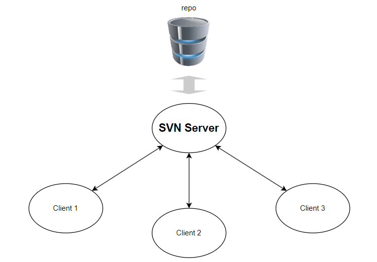

SVN简介
引言
SVN（Subversion）是一个版本管理软件，非常适合部署在局域网内的一台服务器上，并由服务器中的多个用户访问和协同开发。和Git不同，SVN是一个集中式的版本管理系统，也即最新的版本仅仅保存在服务器上，用户客户端本地保存的只是整个版本库的一部分。因此，如果开发中涉及大量比较大的资源文件（图片、视频、数据等），使用SVN可以减少数据检出和更新的次数，从而尽可能减小客户端本地的空间占用。对于非纯代码开发的项目更加友好。
为什么需要使用版本管理工具
常规的操作系统中的文件系统管理文件的最小粒度是文件。当项目有多个用户需要协同开发时，如果两个开发者同时修改了同一个文件，在提交到项目系统的时候就会发生冲突。
而SVN等版本管理工具将文件管理的粒度细化到了文件中的行。如果两个用户修改了同一个文件，在提交的时候SVN会提示后提交的用户所提交的文件与远程版本库中的文件存在冲突，并明确标出文件的本地版本和远程版本之间那些行存在差异，从而方便用户决定哪些行需要保留，哪些行需要进一步修改。
此外，版本管理工具可以提供项目仓库在特定时间的快照，也即记录每一个文件的每一次历史修改。用户在提交对项目文件的修改时还需要提交一条评论（comment），用来说明本次修改的大致内容。
版本管理工具只能针对纯文本文件实现文本行的粒度管理。对于富文本文件、二进制数据文件等非纯文本的文件类型无法实现冲突合并等版本管理功能。但是.docx等富文本文件仍然可以放在SVN版本管理库中进行管理。只是不能由多个开发者同时修改并提交。否则后提交的用户的版本会直接覆盖先提交的用户的版本，导致先提交的用户的工作无法在文件的最新版本中体现。
SVN的基本架构
SVN采取的是Server/Client架构，服务器上需要部署SVN服务，用户通过访问服务器上的服务，实现版本控制的各项功能。

访问SVN服务的时候需要指定使用svn协议，并指定服务器的IP地址和监听端口号。所谓的版本库实际上是一个文件系统。这个文件系统挂载在SVN服务器上。用户在检出版本库的时候，可以检出整个版本库（也即从根目录递归检出），也可以从某一个子目录开始递归检出。甚至可以只检出某一个具体的目录中的文件而不检出其子目录下的文件。
此外，借助于TortoiseSVN等GUI工具，客户端也可以在不检出版本库的情况下，访问版本库中某一个历史版本（当然也包含当前最新版本）中的某一个文件（实际上这是TortoiseSVN会将用户指定的文件检出，并保存在客户端的一个临时目录中）。
因此，相比于其他的版本管理工具，SVN提供了更多的灵活性。